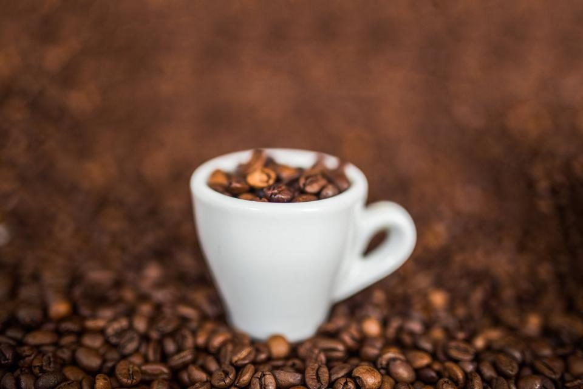

メニュー
メニュー
メニューと価格は準備中です。確認でき次第、こちらに掲載します。
| メニュー | 準備中 |
|---|---|
| 価格 | 準備中 |
| ご予約 | 準備中 |
下の三つのケースは、制作側が用意した空のケースです。中の写真はイメージとして置いたフリー素材で、お店で提供しているものではなく、提供内容を示すものでもありません。
ケース1 準備中
豆のしわと割れ目
ケース2 準備中豆の山に小さな白いカップ

ケース3 準備中
豆がぎっしり
メニュー
メニューと価格は準備中です。確認でき次第、こちらに掲載します。
| メニュー | 準備中 |
|---|---|
| 価格 | 準備中 |
| ご予約 | 準備中 |
下の三つのケースは、制作側が用意した空のケースです。中の写真はイメージとして置いたフリー素材で、お店で提供しているものではなく、提供内容を示すものでもありません。
